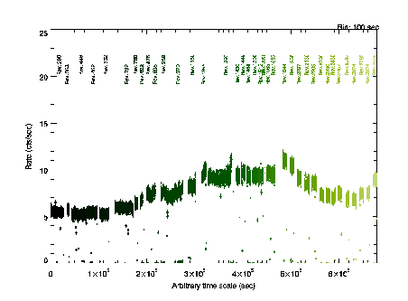

XMM-Newton Science Analysis System
evqpb (evqpb-0.4.7) [xmmsas_20170112_1337-16.0.0]
Introduction
The EPIC CCD cameras on board XMM-Newton are equipped with a filter
wheel system and 6 different filter setups. One of this is a CLOSED
filter. Exposures taken with the filter wheel in the CLOSED position
are dominated by the instrumental background and can be used to model
and subtract the internal instrumental background. This is composed
by:
- Electronic readout noise (at lowest energies)
- High energy particles producing charge directly in CCD and Camex
- Particle induced X-rays (continuum and fluorescent lines), generated inside the camera
- Thermal CCD noise is negliglible
Filter Wheel Closed (FWC) event lists exist and are available through
the SOC web pages for EPIC-pn and EPIC-MOS for the different EPIC
modes. evqpb makes use of the CCF containing only FWC event lists
corresponding to EPIC-pn Full Frame (FF) Mode and EPIC-MOS Full Frame
(FF) Mode. It is highly recommended not to combine event lists from
different submodes since line widths and pattern fractions are
slightly different for each of the EPIC readout modes.

Fig.1 shows as an example the EPIC-pn FF FWC CCF events in a 100
seconds bin light curve. The filter expression used to create this
light curves is
.
XMM-Newton SOC/SSC -- 2017-01-12